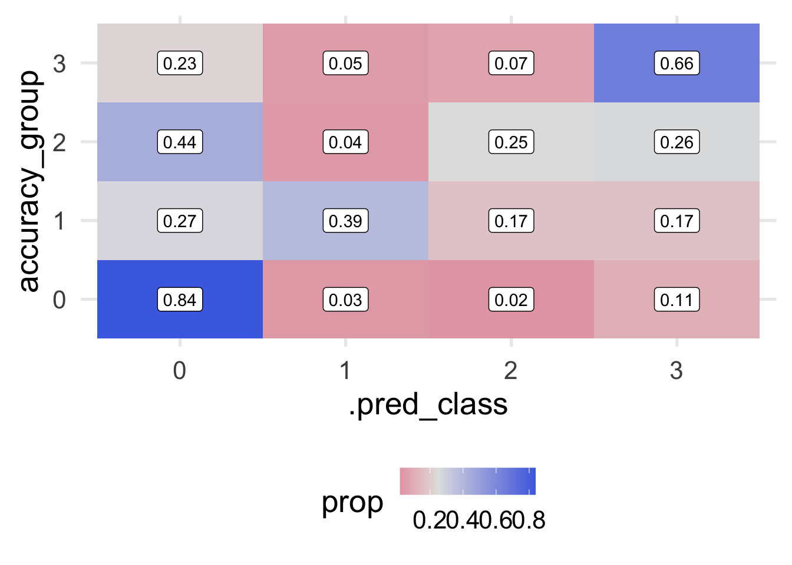

4.4 Tuning decision trees
In the previous section, we fit a model with the default settings. Can we improve performance by changing these? Let’s find out! But first, what might we change?
4.4.1 Decision tree hyperparamters
Decision trees have three hyperparamters as shown below. These are standard hyperparameters and are implemented in {rpart}, the engine we used for fitting decision tree models in the previous section. Alternative implementations may have slightly different hyperparameters (see the documentation for parsnip::decision_tree() details on other engines).
| Hyperparameter | Function | Description |
|---|---|---|
| Cost Complexity | cost_complexity() |
A regularization term that introduces a penalty to the objective function and controls the amount of pruning. |
| Tree depth | tree_depth() |
The maximum depth the tree should be grown |
| Minimum \(n\) | min_n() |
The minimum number of observations that must be present in a terminal node. |
Perhaps the most important hyperparameter is the cost complexity parameter, which is a regularization parameter that penalizes the objective function by model complexity. In other words, the deeper the tree, the higher the penalty. The cost complexity parameter is typically denoted \(\alpha\), and penalizes the sum of squared errors by
\[ SSE + \alpha |T| \]
where \(T\) is the number of terminal nodes. Any value can be use for alpha, but typical values are less that 0.1. The cost complexity helps control model complexity through a process called pruning, in which a decision tree is first grown very deep, and then pruned back to a smaller subtree. The tree is initially grown just like any standard decision tree, but it is pruned to the subtree that optimizes the penalized objective function above. Different values of \(\alpha\) will, of course, lead to different subtrees. The best values are typically determined via grid search via cross validation. Larger cost complexity values will result in smaller trees, while smaller values will result in more complex trees.
Note that, similar to penalized regression, if you are using cost complexity to prune a tree it is important that all features are placed on the same scale (normalized) so the scale of the feature doesn’t influence the penalty.
The tree depth and minimum \(n\) are a more straightforward methods to control model complexity. The tree depth is just the maximum depth to which a tree can be grown (maximum number of splits). The minimum \(n\) controls the splitting criteria. A node cannot be split further once the \(n\) within that node is below the minimum specified.
4.4.2 Conducting the grid search
Let’s tune our model using cost_complexity() and min_n() and let the depth be controlled by these parameters.
First, we’ll modify our model from before to set the parameters to tune.
Next, we’ll set up our grid. We can use helper functions from the {dials} package (part of tidymodels) to help us come up with reasonable values. Let’s use a regular grid with 10 possible values for cost complexity and 5 possible values for the minimum \(n\).
Let’s see what the space we’rd evaluating actually looks like for our hyperparamters.

As we can see, there’s a big gap in cost complexity, so we’ll want to be careful when we investigate the optimal values there.
Now let’s actually conduct the search. I have again included timing here so you can see how long it took for me to run on my local computer (which is a decent amount of time).
## 189.721 sec elapsedFirst let’s look at our results by hyperparameter. We can use collect_metrics to get a summary (mean) of the metrics we set (which we didn’t, so we’ll get the defaults, which in this case are roc_auc and accuracy) across folds. You can optionally get te results by fold (no summarizing) by specifying summarize = FALSE.
## # A tibble: 100 x 8
## cost_complexity min_n .metric .estimator mean n std_err .config
## <dbl> <int> <chr> <chr> <dbl> <int> <dbl> <chr>
## 1 0.0000000001 2 accuracy multiclass 0.692 10 0.0187 Model01
## 2 0.0000000001 2 roc_auc hand_till 0.770 10 0.0177 Model01
## 3 0.000000001 2 accuracy multiclass 0.692 10 0.0187 Model02
## 4 0.000000001 2 roc_auc hand_till 0.770 10 0.0177 Model02
## 5 0.00000001 2 accuracy multiclass 0.692 10 0.0187 Model03
## 6 0.00000001 2 roc_auc hand_till 0.770 10 0.0177 Model03
## 7 0.0000001 2 accuracy multiclass 0.692 10 0.0187 Model04
## 8 0.0000001 2 roc_auc hand_till 0.770 10 0.0177 Model04
## 9 0.000001 2 accuracy multiclass 0.692 10 0.0187 Model05
## 10 0.000001 2 roc_auc hand_till 0.770 10 0.0177 Model05
## # … with 90 more rowsTo get an idea of how things are performing, let’s look at our two hyperparameters with roc_auc as our metric. This is a metric we want to maximize, with a value of 1.0 indicating perfect predictions.
dt_tune_metrics %>%
filter(.metric == "roc_auc") %>%
ggplot(aes(cost_complexity, mean)) +
geom_point() +
facet_wrap(~min_n)
So generally it’s looking like lower values of of cost complexity are leading to better performing models, and the minimum sample size for a terminal node is looking best at 21 or 30. Let’s look at our best models in a more tabular form. This time we’ll use show_best to show our best hyperparameter combinations.
## # A tibble: 5 x 8
## cost_complexity min_n .metric .estimator mean n std_err .config
## <dbl> <int> <chr> <chr> <dbl> <int> <dbl> <chr>
## 1 0.0000000001 21 roc_auc hand_till 0.850 10 0.0177 Model21
## 2 0.000000001 21 roc_auc hand_till 0.850 10 0.0177 Model22
## 3 0.00000001 21 roc_auc hand_till 0.850 10 0.0177 Model23
## 4 0.0000001 21 roc_auc hand_till 0.850 10 0.0177 Model24
## 5 0.000001 21 roc_auc hand_till 0.850 10 0.0177 Model25And we see a little bit different picture here. It appears cost complexity is having almost no effect. We may not want to prune using the cost complexity parameter at all. Let’s use all the results again to look at the minimum \(n\) a little closer.
dt_tune_metrics %>%
filter(.metric == "roc_auc" &
cost_complexity == 0.0000000001) %>%
arrange(desc(mean))## # A tibble: 5 x 8
## cost_complexity min_n .metric .estimator mean n std_err .config
## <dbl> <int> <chr> <chr> <dbl> <int> <dbl> <chr>
## 1 0.0000000001 21 roc_auc hand_till 0.850 10 0.0177 Model21
## 2 0.0000000001 11 roc_auc hand_till 0.840 10 0.0144 Model11
## 3 0.0000000001 30 roc_auc hand_till 0.838 10 0.0167 Model31
## 4 0.0000000001 40 roc_auc hand_till 0.815 10 0.0149 Model41
## 5 0.0000000001 2 roc_auc hand_till 0.770 10 0.0177 Model01Unsurprisingly, 21 is looking best for our minimum \(n\). To be sure we’ve got this right though, let’s set cost_complexity and tune just on the minimum \(n\). We know that values of 11 and 30 are both worst than 21, but let’s see if there’s any more room for optimization around there. This shouldn’t take quite as long as our previous grid search.
grid_min_n <- tibble(min_n = 14:28)
dt_tune2 <- dt_tune %>%
set_args(cost_complexity = 0.0000000001)
tic()
dt_tune_fit2 <- tune_grid(
dt_tune2,
preprocessor = rec,
resamples = cv,
grid = grid_min_n
)
toc()## 59.053 sec elapsedLet’s look at our best metrics now and see if we’ve made any improvements.
## # A tibble: 5 x 7
## min_n .metric .estimator mean n std_err .config
## <int> <chr> <chr> <dbl> <int> <dbl> <chr>
## 1 18 roc_auc hand_till 0.852 10 0.0181 Model05
## 2 19 roc_auc hand_till 0.852 10 0.0181 Model06
## 3 17 roc_auc hand_till 0.852 10 0.0181 Model04
## 4 20 roc_auc hand_till 0.851 10 0.0172 Model07
## 5 21 roc_auc hand_till 0.850 10 0.0177 Model08And look at that! It’s a marginal improvement, but we have optimized our model a bit more.
4.4.3 Finalizing our model fit
Generally before moving to the our final fit I’d probably want to do a bit more work with the model to make sure I was confident it was really the best model I could produce. But for illustration purposes, let’s assume we’re ready to go (and really, decision trees don’t really have a lot more tuning you can do with them, at least using the rpart engine).
First, let’s finalize our model using the best min_n we found from our grid search. We’ll use finalize_model along with select_best (rather than show_best) to set the final model parameters.
best_params <- select_best(dt_tune_fit2, metric = "roc_auc")
final_mod <- finalize_model(dt_tune2, best_params)
final_mod## Decision Tree Model Specification (classification)
##
## Main Arguments:
## cost_complexity = 1e-10
## min_n = 18
##
## Computational engine: rpartNote that the min_n is now set. If we had done any tuning with our recipe we could follow a similar process.
Next, we’re going to use our original initial_split() object to, with a single function fit our model to our full training data (rather than by fold) and make predictions on the test set, and evalute the performance of the model. We do this all throught he last_fit function.
## # Resampling results
## # Monte Carlo cross-validation (0.75/0.25) with 1 resamples
## # A tibble: 1 x 6
## splits id .metrics .notes .predictions .workflow
## <list> <chr> <list> <list> <list> <list>
## 1 <split [468/… train/test … <tibble [2 ×… <tibble [0… <tibble [156 ×… <workflo…What we get output doesn’t look terrifically helpful, but it is. It’s basically everything we need. For example, let’s look at our metrics.
## # A tibble: 2 x 3
## .metric .estimator .estimate
## <chr> <chr> <dbl>
## 1 accuracy multiclass 0.712
## 2 roc_auc hand_till 0.871unsurprisingly, our AUC is a bit lower for our test set. What if we want our predictions?
## # A tibble: 156 x 6
## .pred_0 .pred_2 .pred_3 .row .pred_class accuracy_group
## <dbl> <dbl> <dbl> <int> <fct> <fct>
## 1 0.12 0.08 0.8 6 3 3
## 2 0.12 0.08 0.8 10 3 3
## 3 0.12 0.08 0.8 11 3 3
## 4 0.12 0.08 0.8 19 3 3
## 5 0.5 0.25 0.25 21 0 3
## 6 0.308 0.231 0.462 26 3 3
## 7 0 0.667 0.333 29 2 3
## 8 0.154 0.385 0.462 30 3 3
## 9 0 0.250 0.75 32 3 3
## 10 0 0.250 0.75 34 3 3
## # … with 146 more rowsThis shows us the predicted probability that each case would be in each class, along with a “hard” prediction into a class, and their observed class (accuracy_group). We can use this for further visualizations and to better understand how our model makes predictions and where it is wrong. For example, let’s look at a quick heat map of the predicted class versus the observed.
predictions %>%
count(.pred_class, accuracy_group) %>%
ggplot(aes(.pred_class, accuracy_group)) +
geom_tile(aes(fill = n)) +
geom_label(aes(label = n))
We can see that there are no cases where our model predicts Class 0 but the observed was 3, which is good. But we do have a relatively large number of cases where the predicted was Class 2 but the observed was class 0 and vice versa. This error seems to be more prominent then on the Class 2 versus Class 3 error.
Generally, this model appears to be functioning reasonably well. Because we’ve evaluated the model against the test set, we can no longer make revisions to the model without collecting new data. However, if new data are easily collectable (as they likely are in this case - remember, we only read in a small portion of the overall data), then it may be worth considering revisions for future model developments to be evaluated again that new data.
Decision trees, generally, are easily interpretable and easy to communicate with stakeholders. They also make no assumptions about the data, and can be applied in a large number of situations. Unfortunately, they often suffer from rapid overfitting to the data leading to poor generalizations to unseen data. In the next chapter, we’ll build on decision trees to talk about ensemble methods, where we use multiple trees to make a single prediction.